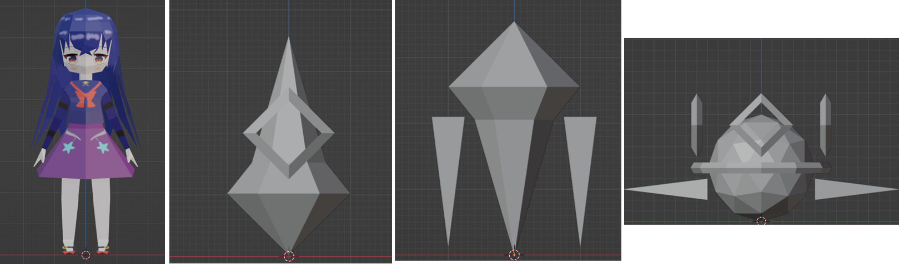

Mini-Fantasy
このゲームはUnityで制作したブラウザでプレイできるアクションRPGです。
ステージ上に配置された敵を倒しながら2つの鍵を集め、ボス部屋の扉を開けてボスを撃破することが目標です。
左上にはHP（緑）・MP（青）・SP（ピンク）のゲージが表示されており、
魔法使用時にMPを消費し、SPが溜まると必殺技が使えるようになります。
【操作方法】
WASD：移動 ／ Shift：ダッシュ ／ Tab：敵ロックオン
左クリック：通常攻撃 ／ 右クリック：魔法 ／ E：回復魔法
F：ガード ／ Q：必殺技 ／ P：ポーズ
大学の授業の課題として約1ヶ月で制作しました。
もともとゲームが好きで、自分の手でアクションRPGを作ってみたいという思いがあり、
授業の課題をきっかけに本格的に取り組みました。
3Dモデルはすべて自作で、WebGLで動かすことを前提にローポリで制作しています。
モデリング・リギング・スキニング・テクスチャ作成・アニメーション作成まで、
すべての工程を一人で担当しました。

プログラム面では、敵AIの実装に特に苦労しました。
NavMeshを使った索敵・追跡・巡回の状態遷移を組み、
剣士・銃士・ボスの3種類それぞれに異なる行動パターンを持たせています。
ボス戦ではプレイヤーとの距離に応じて近距離攻撃と遠距離攻撃を切り替える仕組みにしました。
ロックオンシステムもこだわったポイントです。
Tabキーで近くの敵を順番にロックオンでき、
Cinemachineと連携して専用カメラに切り替わるようにしています。
WebGLビルド自体はUnityの機能で行えましたが、
VFX Graphを使って魔法の弾の残像エフェクトや、必殺技で雷を無数に呼び出す演出まで作り込んだものの、
実際にWebGLでビルドするまでVFX Graphが対応していないことに気づかず、
最終的にそれらが反映できず、見た目は少し質素な仕上がりになってしまいました。
効果音の制作はSeia1004さんに協力していただきました。